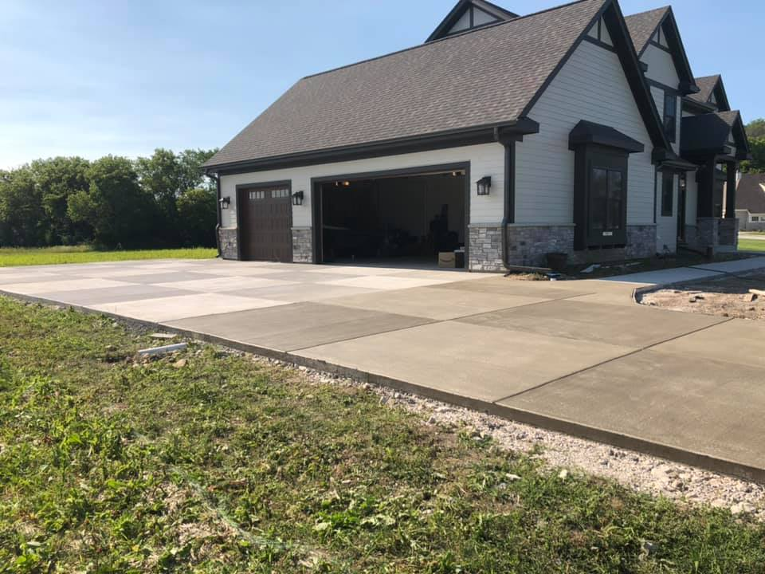
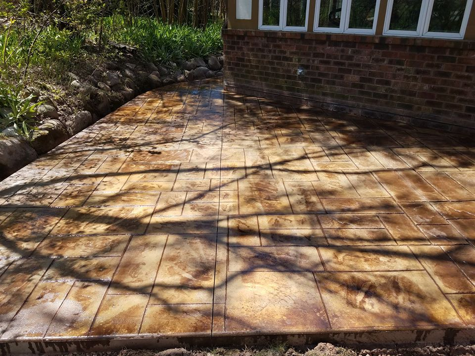
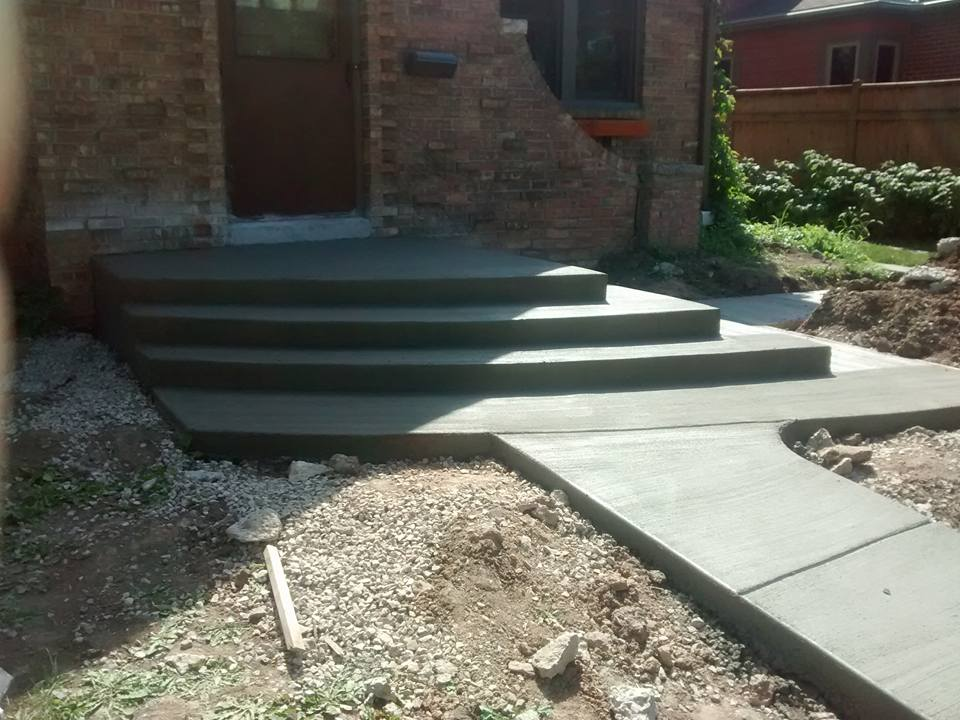
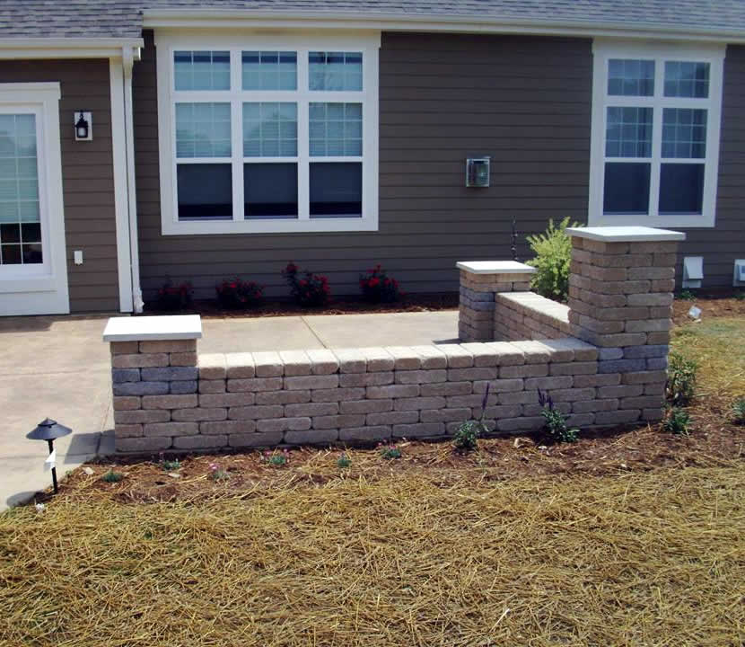

Waukesha & Lake Country · Concrete & masonry
Poured right by
the Hill family.
Since 1983.
Driveways, patios, steps and stamped concrete.
Our own crew. No sub-contractors.

A concrete tradition.
Meet the Hills
A trade passed
from father to sons.
Steve Hill established Custom Construction of Wisconsin in 1983 as a concrete mason. His sons Matt, Nick and Steve grew up learning the trade from him and joined the family business.
Read the family story →Concrete, with character
Made for the way you live.

Pattern & texture.
Stamped and colored concrete for a different kind of patio.

A proper welcome.
Driveways, stairs, sidewalks and patios in concrete.

Beyond the slab
Brick. Stone.
Room to gather.
Brick pavers, retaining walls and outdoor living areas. Plus concrete repairs, sealing, waterproofing, chimneys and masonry.
Brick pavers & stone →Stained, stamped, textured or bordered with brick pavers — explore the possibilities with the crew.
Close to home
Waukesha & Southeast Wisconsin.
Serving Waukesha, Milwaukee, Ozaukee and Washington counties, including the Lake Country communities listed here.
Select a town to check our published service area.
Talk concrete
What are you planning?
Call to discuss your project and request a free estimate.
Call 262-894-9030 ↗1105 Motor Ave · Waukesha, WI 53188
A first look at your new site.
Visit the current business website ↗